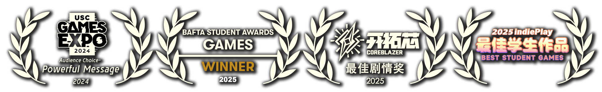

プロデューサー、リードアーティスト、デザイナー、プランナー
34人学生チームの動力の結果。アメリカ高校シミュレーションゲーム。転校生ジョージとして、学校のアイドル、リチャードの野望を止めてみる。
Read moreプロデューサー、リードアーティスト、デザイナー、プランナー
Richard Lemarchand先生のゲーム開発授業で作りました。
ジャズとカッコイイな落書きアクションゲーム。主人公はちっちゃいなカエルです。『パックマン』と少し似ている。

プロデューサー、リードアーティスト
初めて20人ぐらいなチームを管理することだった。
自分で描いた一番長いドット絵作画もこのゲームにある。（30コマ以上）
Designer
2-4人とトラムプであそべる10-15分ぐらいなカードゲーム。
Sam Roberts先生のゲームシステムデザイン授業で作りました。（ルールは英語に）
リードプログラマー
Tracy Fullerton先生のクラスの最後のプロジェクトの結果。
クラスで学んだことのおかげで、結構面白いゲームになった。
プロデューサー、ディレクター、リードアーティスト（ドット絵）、リードプログラマー、など
毎回「真・女神転生」から感じる不思議な感情を伝えるために作ったゲーム。
もっと詳しくプロデューサー、ディレクター、アーティスト（ドット絵）、リードプログラマー
「スチール・ザ・スポットライト」から学んだ経験を持って、このゲームを作りました。最初自分で作ったちゃんとなゲームです。短いだが今でも誇りがあります。
もっと詳しくゲームデザイナー
始め参考したゲームプロジェクト、ゲーム作ることを学ぶために。
私たちがまるでプロジェクトで全犯せるミスを犯しました。大変勉強になって、いい友も作りました。